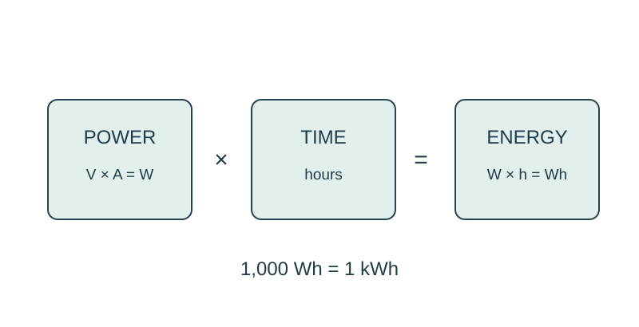

Job 29 · Budget electrical power and energy
A device-use estimate using stated ratings and a clearly labeled fictional tariff.
110 minutes • Tape measure + pocket notebook • Name: __________________ Date: __________
Materials: Notebook, calculator, teacher-provided low-voltage rating cards; no need to open appliances.

Brief · 12 min
- Which quantity is power and which is energy: watts or watt-hours? What additional information does an energy estimate need?
- Set up a dated notebook spread: sketch and readings on the left; calculation, decision, test, and revision on the right. Mark small sketches NTS unless drawn to a chosen scale.
- Work in pairs and rotate roles. Each student keeps an individual notebook and performs a tool action and a calculation.
Measure · 18 min
- Read two supplied ratings: a 6-V model load at 0.25 A and a 6-V model load at 0.50 A.
- Record planned operation time of 2 h for each.
- Label these as supplied cases, not measurements of school devices.
Plan · 20 min
- Calculate power and energy for both supplied loads.
- For a larger fictional estimate, calculate energy for ten 20-W lights operating 5 h.
- Keep watts, hours, Wh, kWh, and dollars in separate labeled columns.
Worked example
Find power and energy of a 6-V load drawing 0.25 A for 2 h. P=VI; E=P×time. 1.5 W; 3 Wh=0.003 kWh. At fictional $0.20/kWh, energy cost=$0.0006 for this tiny example.
Make · 28 min
- Make a paper usage schedule and calculate daily energy.
- Change operating time or load count and issue a revised estimate.
- Exchange estimates and check factors of 1000 and multiplication order.
Test · 20 min
- Power and energy have correct units.
- Ratings and tariff are labeled supplied/fictional.
- Recommendation quantifies the effect of a changed schedule without inventing real utility savings.
Explain · 12 min
- Complete the individual exit below before discussing answers.
- Add the test result, revision, and notebook page reference to your response. Use the notebook as evidence rather than retyping every page.
- Save the three selected responses and submit the lesson for teacher review. Show your physical work and notebook to the teacher. Clean up and return shared supplies.
Individual exit
Six 10-W lights run 4 h. Find total power, energy in Wh and kWh, and cost at fictional $0.25/kWh.